.jpg)
We use a bunch of different cleaning supplies, and we are always welcome to input, as well as any allergies you may have to cleaning products.
We will also link the products that we use.
| Name | Uses | Image |
|---|---|---|
| Microfibre Cloth | A Mircofibre cloth is a synthetic cleaning tool made of ultra-fine fibers that trap dirt, dust, and liquid without scratching surfaces. It can wipe things up without leaving streaks on the counter. | 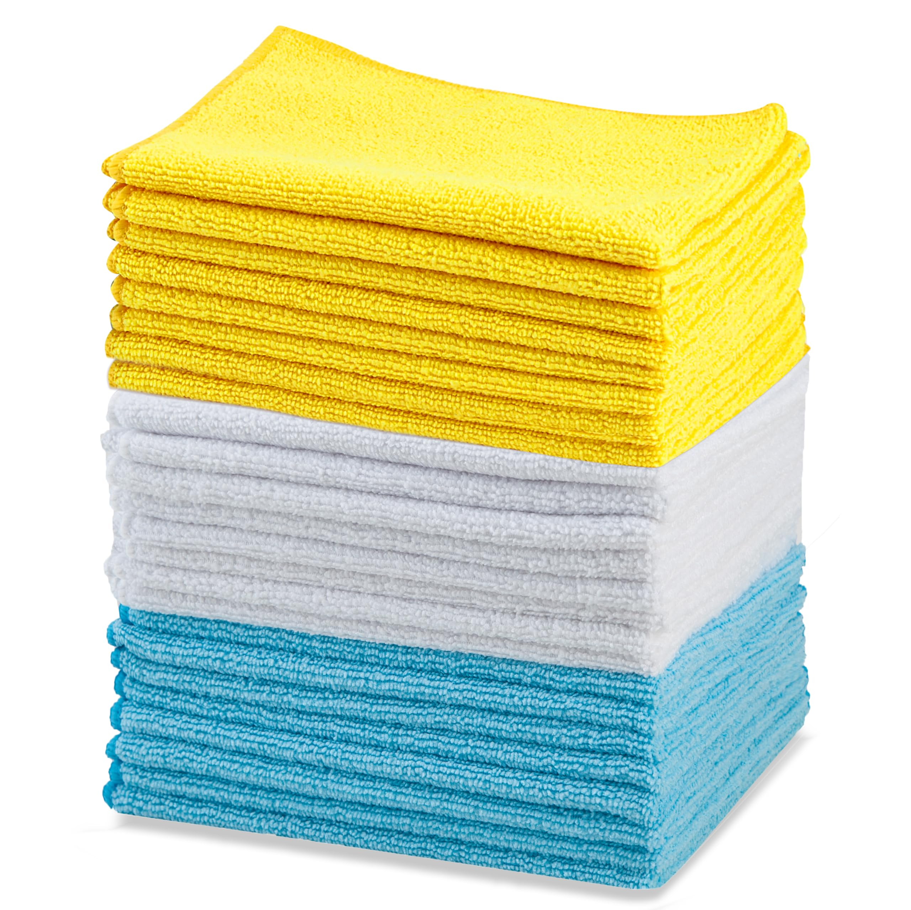 |
| Vaccum | A vacuum is an appliance that uses suction to pull up dirt, dust,crumbs and hair from floors, carpets and other surfaces. | 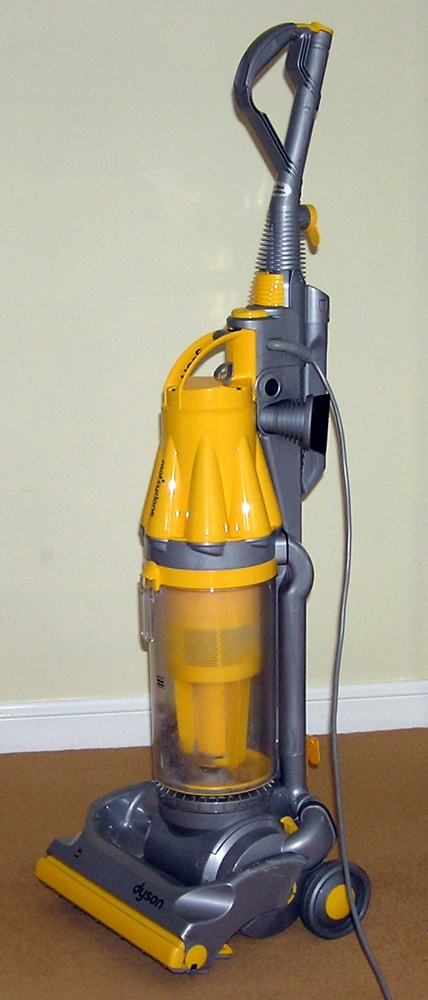 |
| Swiffer Mop | An all-in-one spray mop that gives you a deep clean on multiple floor surfaces in half the time as the traditional mop and bucket. | 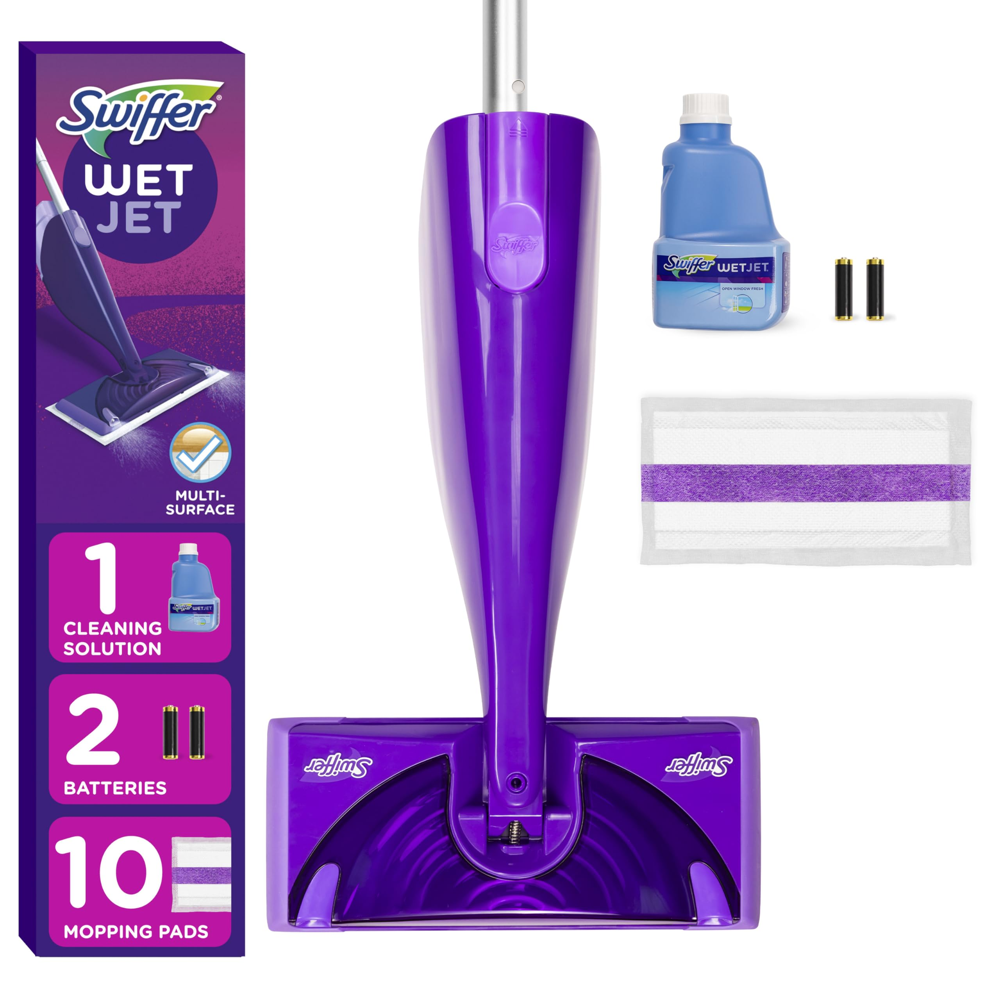 |
| Scrub Daddy | Texture-changing cleaning sponge | 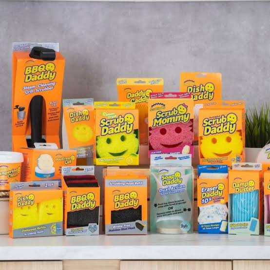 |
| Squeegee | A hand-held tool designed to remove, control ot spread liquid on a flat surfaces | 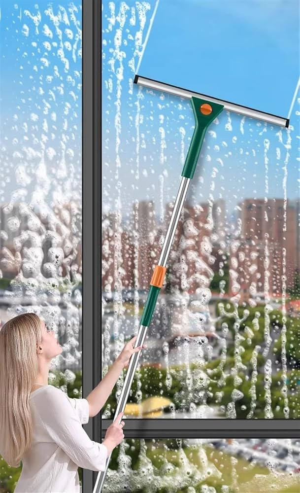 |
| Duster | A cloth or brush used to remove dust from the surfaces | 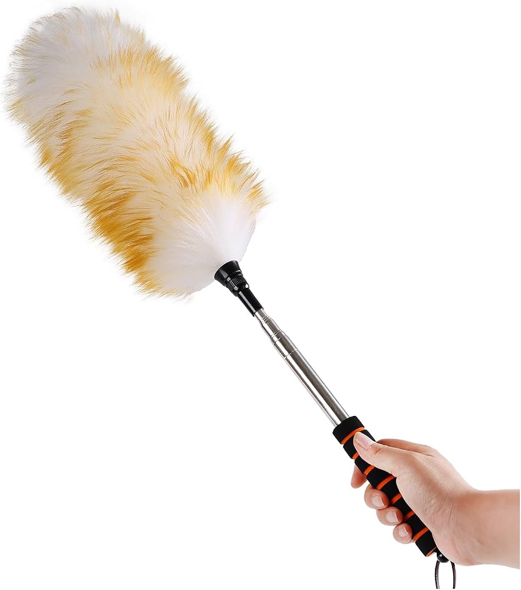 |
| Rubber Gloves | Waterproof hand coverings, designed to protect skin form water, dirt or harsh chemicals | 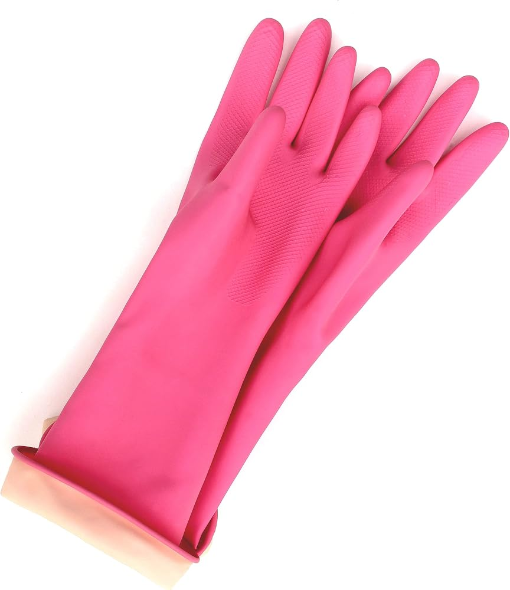 |
| Caddy | A portable, lightweight container designed to hold and organize your supplies | 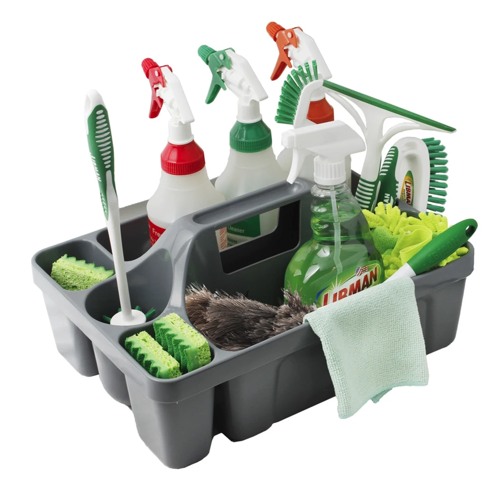 |
| All Purpose Cleaner | A spray solution designed to cut through grease, dirt, and grime across multiple household surfaces | 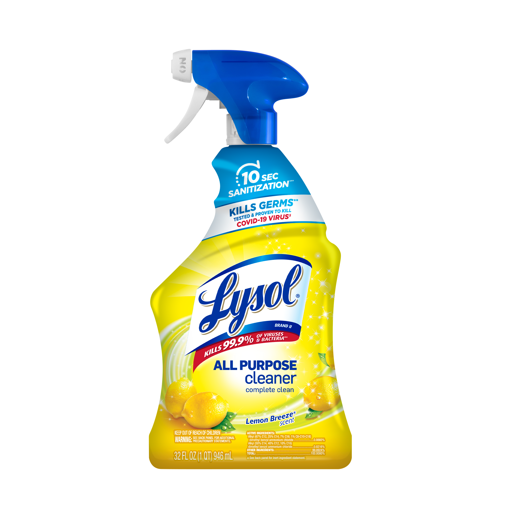 |
| Lysol Toliet Cleaner | A thick, clinging gel designed to adhere and power through tough stains like rust, limescale and hard water rings | 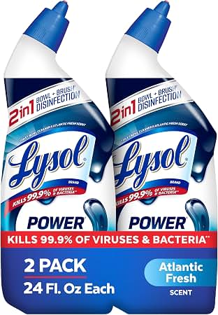 |
| Great Value Mold & Mildew Remover | A spray designed to kill mold, mildrew and 99.9% of germs on hard, non-porous surfaces | 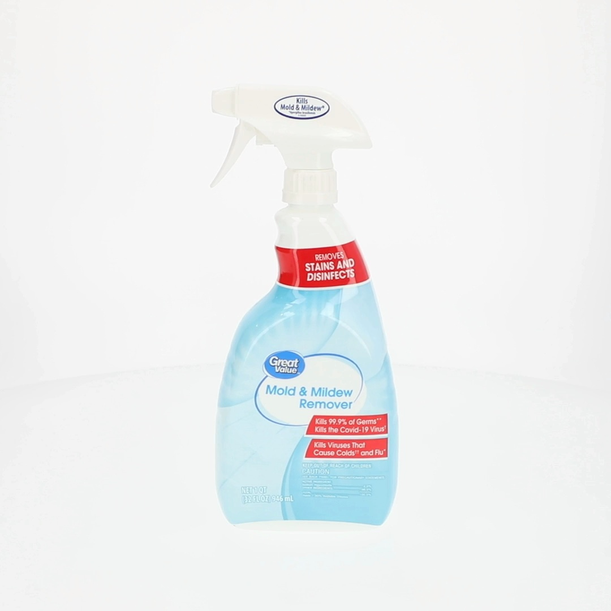 |